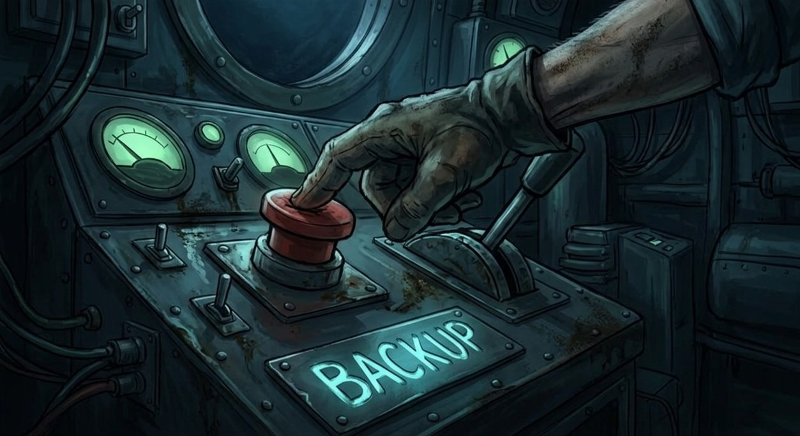

הצוללת תקועה בחושך ומד העומק מראה 450 מטרים.
אורות החירום האדומים נדלקים, ומבעד לחלון הצוללת אתם רואים צללית ענקית ששוחה סביבכם.
זו לא חיה ימית – משהו מאותת לכם חזרה באמצעות הבזקי אור, בדיוק בקצב של אות המצוקה ששמעתם למעלה.
